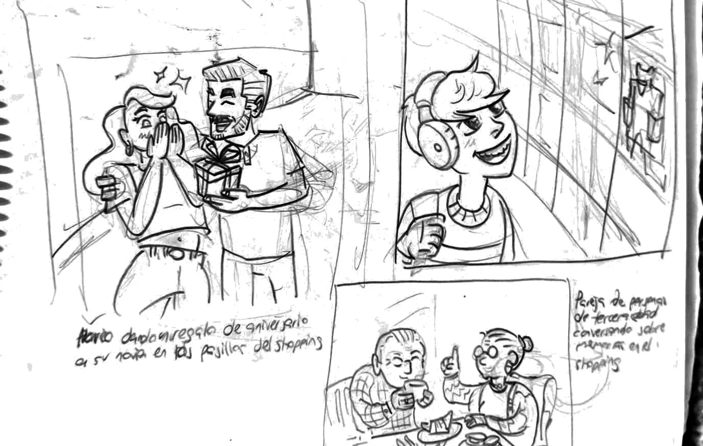

Branding · Sistema visual · 2025
Shopping Mariano
15 años
Diseñé el sello por los 15 años y un sistema gráfico que acompañó las campañas del shopping hasta enero de 2026.
Mi contribución
En Periferia Comunicación diseñé el key visual de los 15 años y sus aplicaciones. La campaña siguió durante el resto del año y llegó hasta Día de Reyes, en enero de 2026.
Un aniversario en plena transición
El shopping cumplía 15 años y Mariano Roque Alonso celebraba su 80.º aniversario. Además, la marca estaba por cambiar de identidad, que se lanzó en marzo de 2026. La campaña tenía que celebrar la historia del shopping y acompañar esa etapa de cambio.
«Donde todo pasa, donde todo evoluciona»
El sistema se construyó con formas que representan distintos aspectos del shopping: magia, ideas, innovación y juegos. Se combinan para enmarcar fotos, acompañar mensajes y convivir con la M de la marca.
Un sistema que se arma
Sello con un 15 escrito a mano, paleta de verde petróleo, turquesa, naranja, coral y amarillo, y DM Sans con el trazo manuscrito. Las imágenes fotográficas se generaron con IA bajo una dirección de imagen unificada, con la misma luz cálida; el sello, el sistema de formas, las composiciones y las piezas gráficas los diseñé yo.


En todas partes, hasta fin de año
Digital, prensa, versiones con locatarios, activaciones y mockups de merchandising. La línea no terminó con el aniversario: siguió en Marianoff, en la campaña de fin de año con el sello en verde y dorado, en Navidad y en el KV de Día de Reyes.


Resultado
La campaña siguió después del aniversario: se adaptó a Marianoff, a las piezas de fin de año, Navidad y Día de Reyes, en enero de 2026.
Créditos
- Cliente
- Shopping Mariano
- Agencia
- Periferia Comunicación
- Claim
- Periferia Comunicación
- Diseño, sistema visual, dirección de imagen con IA y animación
- Kevin Mancuello